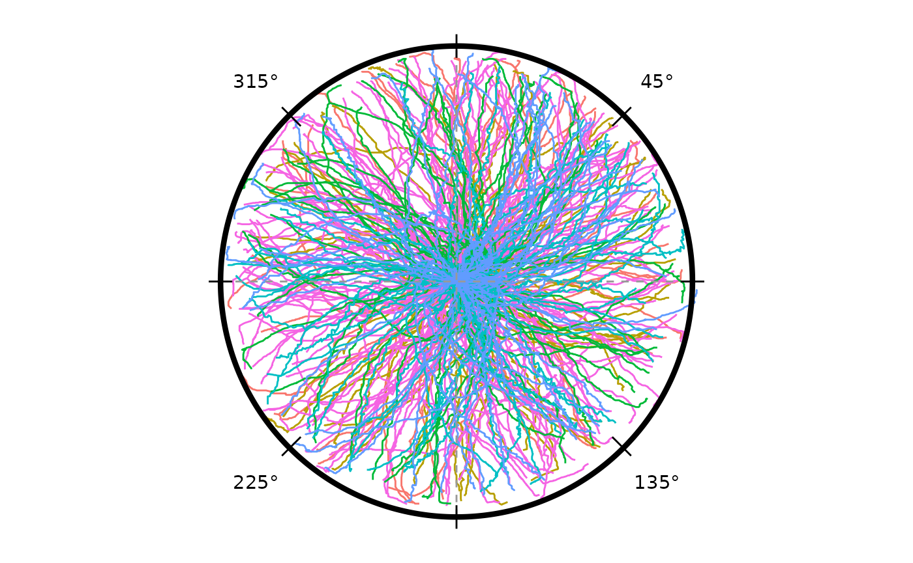
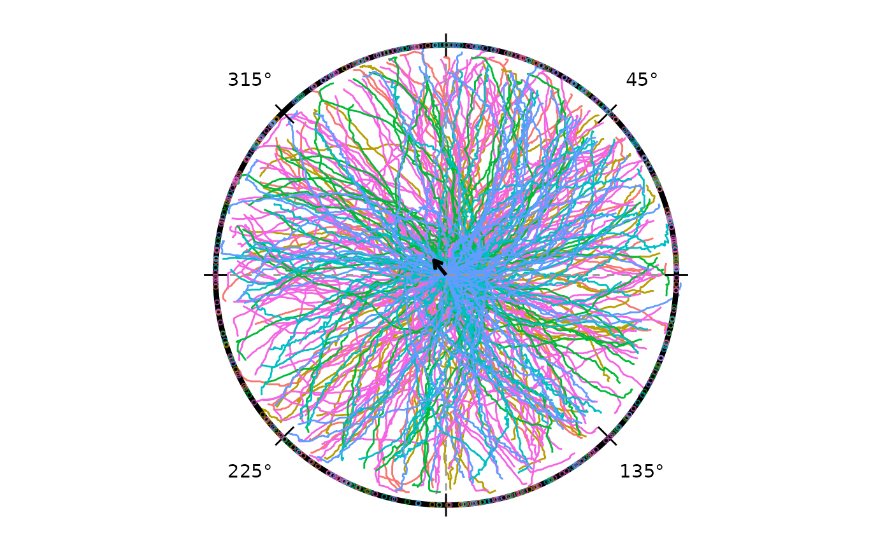
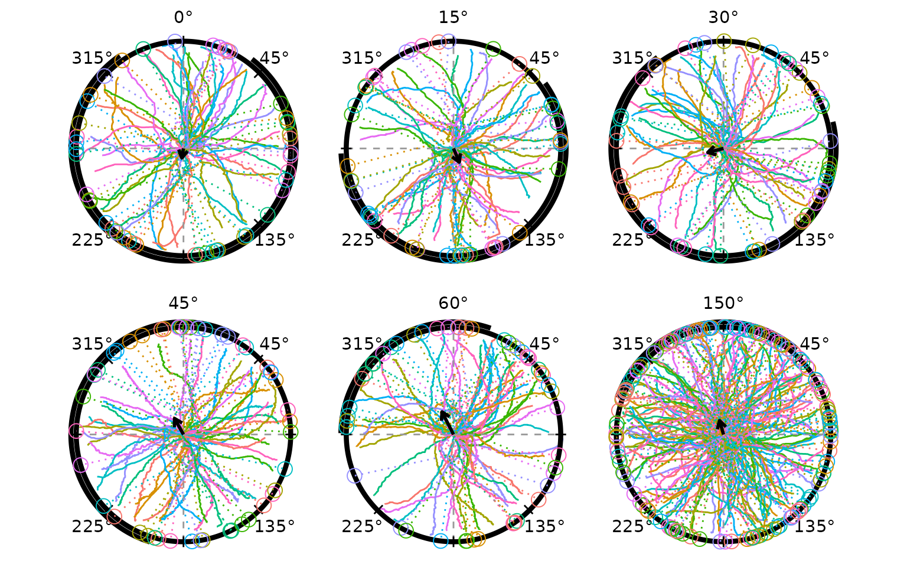
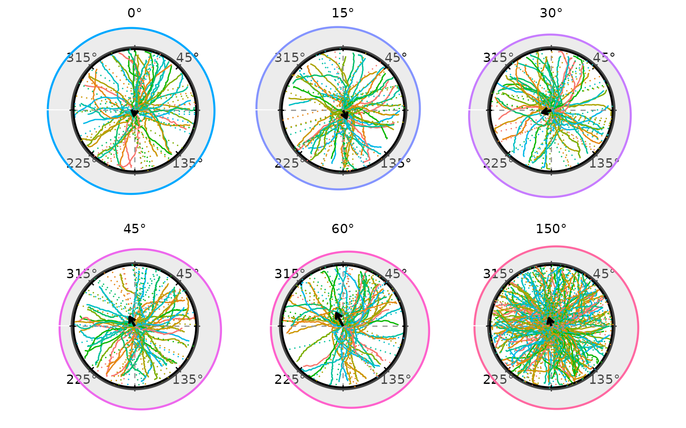
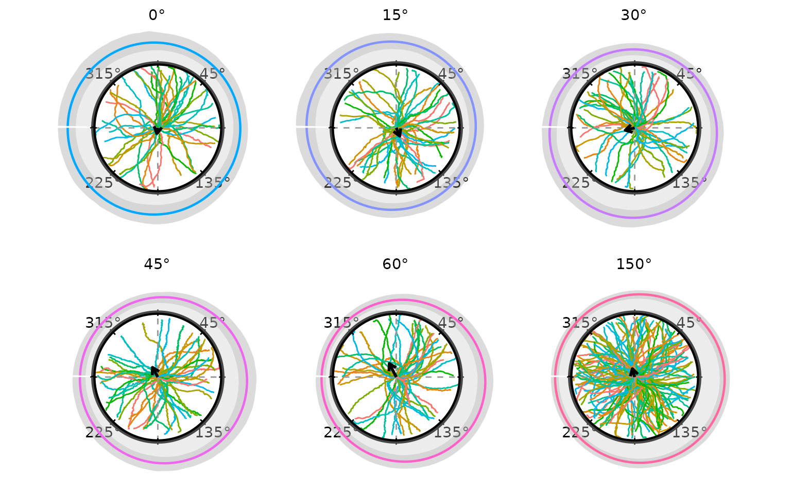
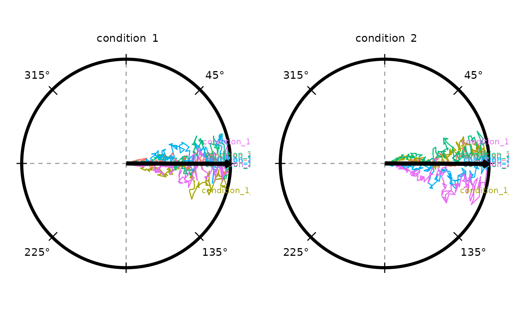

radiatR
radiatR.Rmd
if (requireNamespace("pkgload", quietly = TRUE)) {
# Always load from source so the vignette reflects the current development state.
pkgload::load_all("..", export_all = FALSE, helpers = FALSE, quiet = TRUE)
} else if (requireNamespace("radiatR", quietly = TRUE)) {
library(radiatR)
} else {
stop("Package 'radiatR' not installed and 'pkgload' not available.")
}
library(ggplot2)Overview
radiatR streamlines the journey from raw tracking files
to publication-ready plots for experiments conducted in circular arenas.
The package includes:
- utilities for importing paired landmark/track text files produced by popular tracking suites;
- helpers for extracting trial limits and computing circular summary statistics;
- polished
ggplot2layers for drawing concentric guides and annotated paths.
Import Pipeline
The package ships five arc = 0° example tracks that demonstrate the
full import workflow. Landmark files (_point01.txt) record
two pixel-space reference points per trial (arena centre and reference
point on the arena wall); track files (_point02.txt)
contain the full xy trajectory.
track_dir <- system.file("extdata", "tracks", package = "radiatR")
manifest_path <- system.file("extdata", "P_lividus_trials.csv", package = "radiatR")
file_tbl <- import_tracks(track_dir)
manifest <- import_info(manifest_path)
file_tbl <- load_tracks(file_tbl, manifest, track_dir)
ts_demo <- get_all_object_pos(file_tbl = file_tbl, track_dir = track_dir)
ts_demo
#> TrajSet: 5 trajectories, 2049 observations
#> Columns: id='trial_id', time='frame', angle='rel_theta' (radians), x='trans_x', y='trans_y'
#> Transform steps: unit_circle_mapping
#> # A tibble: 6 × 15
#> trial_id frame x y trans_x trans_y trans_rho abs_theta rel_theta
#> <chr> <int> <dbl> <dbl> <dbl> <dbl> <dbl> <dbl> <dbl>
#> 1 G1D_0_obstacl… 1 1045. 559. 0.181 -0.0395 0.186 6.07 3.93
#> 2 G1D_0_obstacl… 2 1045. 559. 0.181 -0.0395 0.186 6.07 3.93
#> 3 G1D_0_obstacl… 3 1050. 560. 0.191 -0.0407 0.196 6.07 3.93
#> 4 G1D_0_obstacl… 4 1050. 560. 0.191 -0.0407 0.196 6.07 3.93
#> 5 G1D_0_obstacl… 5 1052. 560. 0.197 -0.0407 0.202 6.08 3.94
#> 6 G1D_0_obstacl… 6 1053. 560. 0.199 -0.0407 0.203 6.08 3.94
#> # ℹ 6 more variables: rel_x <dbl>, rel_y <dbl>, video <chr>, order <chr>,
#> # vid_ord <chr>, radius <dbl>get_all_object_pos() reads each landmark/track pair,
normalises coordinates to a unit circle (arena radius = 1), and returns
a TrajSet. Trial metadata (arena radius, reference
position, frame limits) is in
ts_demo@meta$trial_limits.
Full P. lividus Dataset
The package also provides plividus, a pre-computed
TrajSet containing all 401 trajectories from the experiment
across six stimulus arc-angle conditions (0°, 15°, 30°, 45°, 60°, 150°).
Loading it is instant.
data(plividus)
plividus
#> TrajSet: 402 trajectories, 134375 observations
#> Columns: id='trial_id', time='frame', angle='rel_theta' (radians), x='trans_x', y='trans_y', rel_x='rel_x', rel_y='rel_y'
#> Transform steps: unit_circle_mapping
#> # A tibble: 6 × 16
#> trial_id frame x y trans_x trans_y trans_rho abs_theta rel_theta
#> <chr> <int> <dbl> <dbl> <dbl> <dbl> <dbl> <dbl> <dbl>
#> 1 G1D_0_obstacl… 1 1045. 559. 0.181 -0.0395 0.186 -0.214 3.93
#> 2 G1D_0_obstacl… 2 1045. 559. 0.181 -0.0395 0.186 -0.214 3.93
#> 3 G1D_0_obstacl… 3 1050. 560. 0.191 -0.0407 0.196 -0.210 3.93
#> 4 G1D_0_obstacl… 4 1050. 560. 0.191 -0.0407 0.196 -0.210 3.93
#> 5 G1D_0_obstacl… 5 1052. 560. 0.197 -0.0407 0.202 -0.203 3.94
#> 6 G1D_0_obstacl… 6 1053. 560. 0.199 -0.0407 0.203 -0.202 3.94
#> # ℹ 7 more variables: rel_x <dbl>, rel_y <dbl>, video <chr>, order <chr>,
#> # vid_ord <chr>, radius <dbl>, arc <fct>Plotting Trajectories
radiate() draws trajectories on a unit circle with
concentric reference rings. Colouring by the arc factor
shows how paths cluster by condition.
radiate(plividus,
group_col = "trial_id",
colour_col = "arc",
show_labels = FALSE,
show_arrow = FALSE)
Heading Overlays
The crossing method — projecting the vector between
two concentric-ring crossings to the unit circle — assigns one
directional heading per trial. derive_headings() with
return_coords = TRUE returns both the heading angle and the
inner-ring crossing position.
hd <- derive_headings(plividus, rule = "crossing",
circ0 = 0.2, circ1 = 0.4,
coords = "relative",
angle_convention = "clock",
return_coords = TRUE)
# add arc grouping for faceting
hd$arc <- factor(
as.integer(sub("G1D_(\\d+)_.*", "\\1", hd$id)),
levels = c(0, 15, 30, 45, 60, 150),
labels = c("0°", "15°", "30°", "45°", "60°", "150°")
)
names(hd)[names(hd) == "id"] <- "trial_id"
attr(hd, "colour_col") <- "arc"
head(hd[, c("trial_id", "arc", "heading", "x_inner", "y_inner")])
#> trial_id arc heading x_inner
#> 1 G1D_0_obstacle/WIN_20210201_11_24_19_Pro_1 0° 2.4162200 -0.14005857
#> 2 G1D_0_obstacle/WIN_20210201_11_32_56_Pro_1 0° 2.6851092 -0.09694777
#> 3 G1D_0_obstacle/WIN_20210204_16_55_13_Pro_1 0° 2.0733246 0.07213251
#> 4 G1D_0_obstacle/WIN_20210204_17_12_38_Pro_1 0° 2.0834057 -0.18174038
#> 5 G1D_0_obstacle/WIN_20210204_17_30_19_Pro_1 0° 0.3838676 0.19833263
#> 6 G1D_0_obstacle/WIN_20210204_17_44_09_Pro_1 0° 2.6079536 -0.19480474
#> y_inner
#> 1 -0.14277011
#> 2 -0.17493178
#> 3 -0.18652985
#> 4 -0.08347969
#> 5 -0.02577011
#> 6 -0.04528552Overlaying the heading endpoints (one hollow circle per trial) and the grand mean direction on the combined trajectory plot gives a compact summary of the full dataset:
p_all <- radiate(plividus,
group_col = "trial_id",
colour_col = "arc",
show_labels = FALSE,
show_arrow = FALSE) +
add_heading_points(hd, colour_col = "arc", size = 1, alpha = 0.6)
p_all + add_heading_arrow(hd)
#> Warning: Removed 1 row containing missing values or values outside the scale range
#> (`geom_point()`).
The grand mean arrow points at 320.9° relative to the reference direction (clock convention; 0° = toward reference) with R = 0.08, reflecting the overall reference-relative tendency across all conditions.
Circular Interval Arc
Three functions handle directional uncertainty arcs in parallel with the density overlay functions:
| Function | Role |
|---|---|
compute_circ_interval() |
Computes arc bounds from raw headings; returns a data frame with
lower, upper, mean_dir, and
wraps
|
add_circ_interval() |
Renders any bounds data frame as an arc at a configurable radius — agnostic to how the bounds were produced |
add_heading_interval() |
Convenience wrapper: calls the two above in sequence |
Two statistics are supported: stat = "bootstrap_ci"
bootstraps the von Mises MLE confidence interval for the mean direction;
stat = "sd" draws a ±1 circular SD arc. The split design
lets you substitute Bayesian credible bounds into the data frame before
rendering:
iv <- compute_circ_interval(hd, colour_col = "arc", stat = "bootstrap_ci")
# replace with Bayesian posteriors: iv$lower <- ...; iv$upper <- ...
add_circ_interval(iv, colour_col = "arc")Building Up a Panel
Layers compose with the standard ggplot2 +
operator, so a plot can be assembled feature by feature. The four chunks
below start from trajectories only and add heading endpoints, the grand
mean arrow, and finally a bootstrap CI arc.
Trajectories:
p <- radiate(plividus,
group_col = "trial_id",
colour_col = "arc",
show_labels = FALSE,
show_arrow = FALSE)
p
+ Heading endpoints at each trial’s crossing location:
p <- p + add_heading_points(hd, colour_col = "arc", size = 1.5, alpha = 0.7)
p
#> Warning: Removed 1 row containing missing values or values outside the scale range
#> (`geom_point()`).
+ Grand mean direction arrow:
p <- p + add_heading_arrow(hd)
p
#> Warning: Removed 1 row containing missing values or values outside the scale range
#> (`geom_point()`).
The arc at radius 1.05 spans the 95 % bootstrap confidence interval for the grand mean direction pooled across all arc conditions.
Colour Options
Three strategies control how trajectories are coloured.
Option 1 — single colour. Pass a colour string
directly to the heading-overlay helpers; omit colour_col
from radiate() to draw all tracks in the default grey.
Option 2 — cycling palette.
colour_cycle assigns each trajectory a colour index that
cycles back to 1 after every n trajectories. When
panel_by is set the cycle restarts independently within
each panel so that trajectory 1 in every panel always gets colour 1.
Pass an integer for automatic palette assignment, or a character vector
to specify colours explicitly.
Option 3 — variable mapping. colour_col
maps any data column to colour (e.g. the arc factor used in
the combined-trajectory plot above).
Per-Condition Panels
Faceting by arc angle shows each condition separately. Within each
panel, assign_cycle_colours() distinguishes individual
trajectories by cycling through 10 colours, resetting at each panel
boundary. Calling it explicitly on both the track data and the headings
data frame (joining by trial id) means heading markers inherit the exact
per-trajectory colour — not a single per-condition colour — when
colour_col is used for both.
# Pre-compute cycling colours: 10 colours, restarting within each arc panel.
# Join to headings so heading layers can use the same column.
plividus_cc <- plividus
plividus_cc@data <- assign_cycle_colours(plividus@data,
id_col = "trial_id",
n = 10,
panel_col = "arc")
colour_map <- unique(plividus_cc@data[, c("trial_id", "cycle_colour")])
hd_cc <- merge(hd, colour_map,
by = "trial_id", all.x = TRUE)
# merge() strips attributes — restore convention metadata from hd
attr(hd_cc, "angle_convention") <- attr(hd, "angle_convention")
attr(hd_cc, "coords") <- attr(hd, "coords")
attr(hd_cc, "display_convention") <- attr(hd, "display_convention")
attr(hd_cc, "colour_col") <- "cycle_colour"
p <- radiate(plividus_cc,
group_col = "trial_id",
colour_col = "cycle_colour",
panel_by = "arc",
ncol = 3,
show_labels = FALSE,
show_arrow = FALSE)
p
+ Bootstrap CI arc added first so it sits behind heading markers:
p <- p + add_heading_interval(hd_cc, colour_col = "arc", colour = "black",
stat = "bootstrap_ci", boot_reps = 999L)
p
+ Heading vectors (dotted lines from inner crossing to perimeter):
p <- p + add_heading_vectors(hd_cc)
p
#> Warning: Removed 1 row containing missing values or values outside the scale range
#> (`geom_segment()`).
+ Heading points on top of the CI arc:
p <- p + add_heading_points(hd_cc, size = 4)
p
#> Warning: Removed 1 row containing missing values or values outside the scale range
#> (`geom_segment()`).
#> Warning: Removed 1 row containing missing values or values outside the scale range
#> (`geom_point()`).
p <- p + add_heading_arrow(hd_cc, colour_col = "arc", colour = "black")
p
#> Warning: Removed 1 row containing missing values or values outside the scale range
#> (`geom_segment()`).
#> Warning: Removed 1 row containing missing values or values outside the scale range
#> (`geom_point()`).
Each panel shows trajectories and heading markers coloured by
per-trajectory cycling palette, a bootstrap CI arc at radius 1.05 in the
condition colour (rendered behind the heading points), a solid mean
direction arrow, and degree labels. All in clock convention (0° = toward
reference, clockwise). Use strip_position = "inside" to
place the label inside the plot area, or
strip_labels = FALSE to suppress it.
Circular Density Overlays
Three functions handle directional density overlays; they are designed to compose cleanly with any density source:
| Function | Role |
|---|---|
compute_circular_density() |
Estimates density from raw headings; returns a plain data frame of
(theta, density) pairs |
add_circular_density() |
Renders any (theta, density) data frame as a radial
overlay — agnostic to how the density was produced |
add_heading_density() |
Convenience wrapper: calls the two above in sequence |
Three built-in methods are available in
compute_circular_density(): "vonmises" (MLE
via circular::mle.vonmises()), "kernel"
(circular KDE), and "histogram" (bin counts). Because the
computation and rendering steps are separate, the density
column can be replaced with values from any other model — including a
Bayesian posterior predictive density from brms — before
calling add_circular_density():
dens_df <- compute_circular_density(hd, colour_col = "arc", method = "vonmises")
# replace with Bayesian posterior: dens_df$density <- my_brms_fitted_density(dens_df$theta)
add_circular_density(dens_df, colour_col = "arc", fill = "grey80", alpha = 0.35)The convenience wrapper add_heading_density() skips the
intermediate step when no substitution is needed. The combined panel
plot below uses it to shade a per-condition von Mises density alongside
the heading vectors:
radiate(plividus_cc,
group_col = "trial_id",
colour_col = "cycle_colour",
panel_by = "arc",
ncol = 3,
show_labels = FALSE,
show_arrow = FALSE) +
add_heading_density(hd_cc, colour_col = "arc",
method = "vonmises", scale = 0.4,
fill = "grey80", alpha = 0.35) +
add_heading_vectors(hd_cc) +
add_heading_arrow(hd_cc, colour_col = "arc", colour = "black")
#> Warning: Removed 1 row containing missing values or values outside the scale range
#> (`geom_segment()`).
The shaded region is the von Mises density fitted to the crossing
headings within each arc condition. A narrower, taller peak indicates
more concentrated directional responses. Switch to
method = "kernel" for a non-parametric estimate, or
method = "histogram" for a raw count display.
Bootstrap Confidence Band
compute_circular_density() with
boot_reps > 0 runs a non-parametric bootstrap: heading
samples are drawn with replacement, a von Mises MLE is fitted to each
replicate, and the density is re-evaluated on the same angular grid. The
boot_alpha / 2 and 1 - boot_alpha / 2
quantiles across replicates become density_lower and
density_upper columns, which
add_circular_density() renders as a shaded band around the
fitted curve.
dens_boot <- compute_circular_density(hd, colour_col = "arc",
method = "vonmises",
boot_reps = 499L, boot_alpha = 0.05,
n_theta = 300L)
radiate(plividus,
group_col = "trial_id",
colour_cycle = 10,
panel_by = "arc",
ncol = 3,
show_labels = FALSE,
show_arrow = FALSE) +
add_circular_density(dens_boot, colour_col = "arc",
scale = 0.4, fill = "grey80", alpha = 0.35,
ci_fill = "grey60", ci_alpha = 0.35) +
add_heading_arrow(hd, colour_col = "arc", colour = "black")
The darker band is the 95% bootstrap confidence interval for the
fitted von Mises density. A wider band reflects greater parametric
uncertainty, typically seen in the smaller or more diffuse conditions.
The density_lower and density_upper columns in
dens_boot can be replaced with interval values from a
Bayesian model (e.g. the 2.5th and 97.5th percentiles of a
brms posterior predictive distribution) before passing to
add_circular_density().
Circular Summary Statistics
compute_circ_mean() returns the per-condition statistics
behind the arrows above:
compute_circ_mean(hd, colour_col = "arc")[, c("arc", "mean_dir", "resultant_R")]
#> arc mean_dir resultant_R
#> 1 0° 2.9665112 0.08994719
#> 2 15° 3.5404166 0.13925405
#> 3 30° 1.8195779 0.15168934
#> 4 45° 0.5097922 0.17151292
#> 5 60° 0.4702453 0.23689999
#> 6 150° 0.2814510 0.13477135For within-trial path consistency (tortuosity),
circ_summary() operates on the step-by-step angle
distribution:
circ_summary(ts_demo)
#> id n t_start t_end mean_dir
#> 1 G1D_0_obstacle/WIN_20210201_11_24_19_Pro_1 231 1 231 3.864172
#> 2 G1D_0_obstacle/WIN_20210201_11_32_56_Pro_1 507 2 508 3.868930
#> 3 G1D_0_obstacle/WIN_20210204_16_55_13_Pro_1 664 2 665 5.207857
#> 4 G1D_0_obstacle/WIN_20210204_17_12_38_Pro_1 345 1 345 4.034956
#> 5 G1D_0_obstacle/WIN_20210204_17_30_19_Pro_1 302 2 303 5.901587
#> resultant_R kappa
#> 1 0.9986428 NA
#> 2 0.9369969 NA
#> 3 0.7960073 NA
#> 4 0.9408862 NA
#> 5 0.9580959 NAHigh resultant lengths (close to 1) indicate very consistent step directions within a trial.
Alternative Heading Rules
derive_headings() supports fourteen built-in rules.
"crossing" is well suited to echinoderm-style tracks —
moderate tortuosity, consistent outward movement — but other rules may
be more appropriate depending on the taxon and experimental design. Use
list_heading_rules() to see all available names; custom
rules can be added with register_heading_rule().
Two parameter-free alternatives are especially useful:
| Rule | What it returns | Typical use |
|---|---|---|
"distal" |
Angular position of the frame with the largest radius | Straight outward paths (dung beetles, ballistic homing) |
"net" |
Direction of the start-to-end displacement vector | Sinuous or multi-phase paths where only net displacement matters |
distal
The distal rule takes atan2(y, x) at
the frame where the animal is farthest from the arena centre. It
requires no ring parameters and never returns NA because
every trial has a most-distal frame.
hd_distal <- derive_headings(plividus, rule = "distal",
coords = "relative",
angle_convention = "clock",
return_coords = TRUE)
hd_distal$arc <- factor(
as.integer(sub("G1D_(\\d+)_.*", "\\1", hd_distal$id)),
levels = c(0, 15, 30, 45, 60, 150),
labels = c("0°", "15°", "30°", "45°", "60°", "150°")
)
names(hd_distal)[names(hd_distal) == "id"] <- "trial_id"Per-condition resultant lengths from "distal" are very
close to those from "crossing", consistent with P.
lividus tracks being fairly direct:
sm_cross <- compute_circ_mean(hd, colour_col = "arc")[, c("arc", "resultant_R")]
sm_distal <- compute_circ_mean(hd_distal, colour_col = "arc")[, c("arc", "resultant_R")]
names(sm_cross)[2] <- "crossing"
names(sm_distal)[2] <- "distal"
merge(sm_cross, sm_distal, by = "arc")
#> arc crossing distal
#> 1 0° 0.08994719 0.09866019
#> 2 15° 0.13925405 0.12900871
#> 3 150° 0.13477135 0.14318298
#> 4 30° 0.15168934 0.15934680
#> 5 45° 0.17151292 0.18744397
#> 6 60° 0.23689999 0.19465067Visualising the distal headings on the per-condition panel confirms that the spatial pattern is consistent with the crossing method:
plividus_cc_d <- plividus
plividus_cc_d@data <- assign_cycle_colours(plividus@data,
id_col = "trial_id",
n = 10,
panel_col = "arc")
colour_map_d <- unique(plividus_cc_d@data[, c("trial_id", "cycle_colour")])
hd_distal_cc <- merge(hd_distal, colour_map_d, by = "trial_id", all.x = TRUE)
attr(hd_distal_cc, "angle_convention") <- attr(hd_distal, "angle_convention")
attr(hd_distal_cc, "coords") <- attr(hd_distal, "coords")
attr(hd_distal_cc, "display_convention") <- attr(hd_distal, "display_convention")
attr(hd_distal_cc, "colour_col") <- "cycle_colour"
radiate(plividus_cc_d,
group_col = "trial_id",
colour_col = "cycle_colour",
panel_by = "arc",
ncol = 3,
show_labels = FALSE,
show_arrow = FALSE) +
add_heading_interval(hd_distal_cc, colour_col = "arc", colour = "black",
stat = "bootstrap_ci", boot_reps = 999L) +
add_heading_points(hd_distal_cc, size = 4) +
add_heading_arrow(hd_distal_cc, colour_col = "arc", colour = "black")
Because P. lividus tracks are nearly radial, the heading estimates agree closely across methods. For more sinuous species (moths, pigeons) the choice of rule has a larger influence on the result.
net
The net rule returns the direction of the vector from the first recorded position to the last, ignoring all intermediate points. It is the fastest possible estimate and is the natural match for GPS vanishing-bearing studies where only the release and final observed positions are available.
hd_net <- derive_headings(plividus, rule = "net",
coords = "relative",
angle_convention = "clock")
hd_net$arc <- factor(
as.integer(sub("G1D_(\\d+)_.*", "\\1", hd_net$id)),
levels = c(0, 15, 30, 45, 60, 150),
labels = c("0°", "15°", "30°", "45°", "60°", "150°")
)
names(hd_net)[names(hd_net) == "id"] <- "trial_id"
sm_net <- compute_circ_mean(hd_net, colour_col = "arc")[, c("arc", "resultant_R")]
names(sm_net)[2] <- "net"
Reduce(function(a, b) merge(a, b, by = "arc"),
list(sm_cross, sm_distal, sm_net))
#> arc crossing distal net
#> 1 0° 0.08994719 0.09866019 0.1003765
#> 2 15° 0.13925405 0.12900871 0.1350682
#> 3 150° 0.13477135 0.14318298 0.1382390
#> 4 30° 0.15168934 0.15934680 0.1635828
#> 5 45° 0.17151292 0.18744397 0.1858180
#> 6 60° 0.23689999 0.19465067 0.1978115For these tracks the three methods give very similar resultant lengths. Larger differences would be expected for species with complex search behaviour before committing to a direction.
Simulating Demo Data
simulate_tracks() generates synthetic trajectories
without any files, useful for testing and demonstrations. The
kappa parameter controls directedness:
sim_df <- simulate_tracks(
conditions = data.frame(n_trials = c(5L, 5L), kappa = c(2, 8)),
n_points = 150,
seed = 42
)
ts_sim <- TrajSet(
sim_df,
id = "trial_id", time = "frame",
angle = "rel_theta", x = "rel_x", y = "rel_y",
angle_unit = "radians", normalize_xy = FALSE
)
radiate(ts_sim,
group_col = "trial_id",
colour_cycle = 5,
panel_by = "condition",
ncol = 2,
show_arrow = TRUE)
The left panel (low kappa) shows tortuous paths; the
right (high kappa) shows straighter, more directed tracks.
The mean resultant arrow is computed independently per panel.